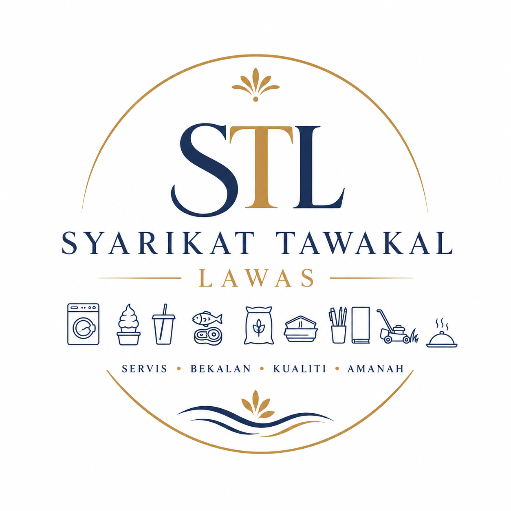
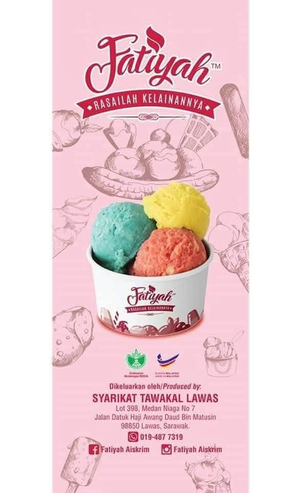
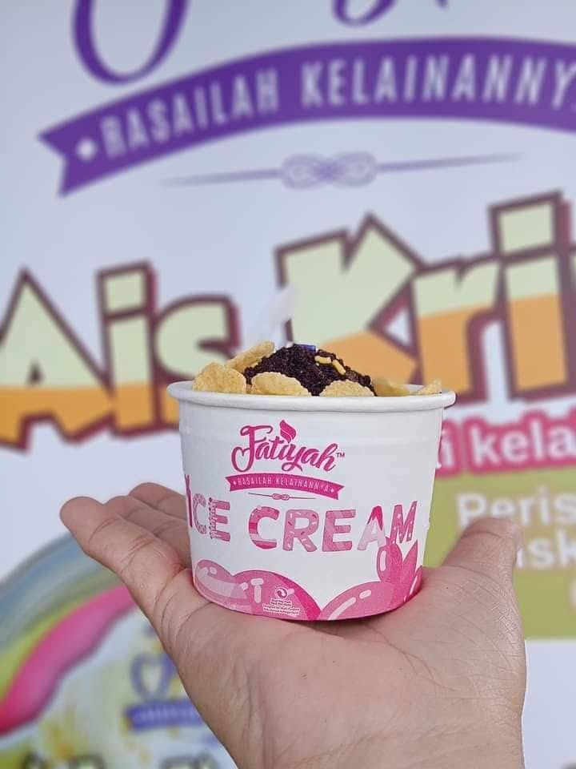

Lebih 25 tahun menyediakan pelbagai perkhidmatan pembekalan, katering dan penyelesaian perniagaan kepada pelanggan di Lawas, Sarawak.
Hubungi KamiSyarikat Tawakal Lawas merupakan sebuah syarikat milik tempatan yang telah ditubuhkan sejak tahun 1999. Berpengalaman lebih 25 tahun dalam bidang pembekalan dan perkhidmatan, kami komited menyediakan penyelesaian yang berkualiti kepada pelanggan daripada sektor kerajaan, swasta, institusi pendidikan dan komuniti setempat.
Dengan slogan Servis • Bekalan • Kualiti • Amanah, kami sentiasa mengutamakan profesionalisme, integriti serta kepuasan pelanggan dalam setiap perkhidmatan yang diberikan.
"Rasailah Kelainannya"


Fatiyah Aiskrim merupakan jenama utama di bawah Syarikat Tawakal Lawas. Kami menyediakan perkhidmatan katering aiskrim untuk pelbagai jenis majlis seperti program kerajaan, hari keluarga, majlis perkahwinan, acara korporat, sekolah, institusi pendidikan dan aktiviti komuniti.
Perkhidmatan katering aiskrim melalui jenama Fatiyah Aiskrim.
Penyediaan makanan bermasak untuk pelbagai majlis.
Pembekalan minuman untuk organisasi dan program.
Pembekalan bahan mentah basah berkualiti.
Pembekalan bahan makanan kering.
Makanan dalam botol dan bungkusan.
Keperluan pejabat, institusi dan sekolah.
Perkhidmatan dobi yang profesional.
Penyelenggaraan kawasan dan landskap.
Ditubuhkan sejak tahun 1999.
Mengutamakan kualiti dalam setiap perkhidmatan.
Melayani pelanggan sektor kerajaan dan swasta.
Perkhidmatan yang cekap dan mesra pelanggan.
Galeri akan dikemaskini dengan lebih banyak gambar aktiviti dan perkhidmatan kami.
Kami sentiasa mengalu-alukan individu yang berdedikasi, bertanggungjawab dan bersemangat untuk berkembang bersama syarikat.
Jawatan Yang Berpotensi Ditawarkan:
SYARIKAT TAWAKAL LAWAS
No. Pendaftaran Perniagaan: LWS96/99
Pibu Lawas, Tingkat 1, Lot 490, Sublot 8, Jalan Datuk Haji Awang Daud Bin Awang Matusin, 98850 Lawas, Sarawak.
📞 +60 19-487 7319 (Mdm. Fatiyah)
📧 tawakallawas@yahoo.com
📘 Facebook: Fatiyah Aiskrim